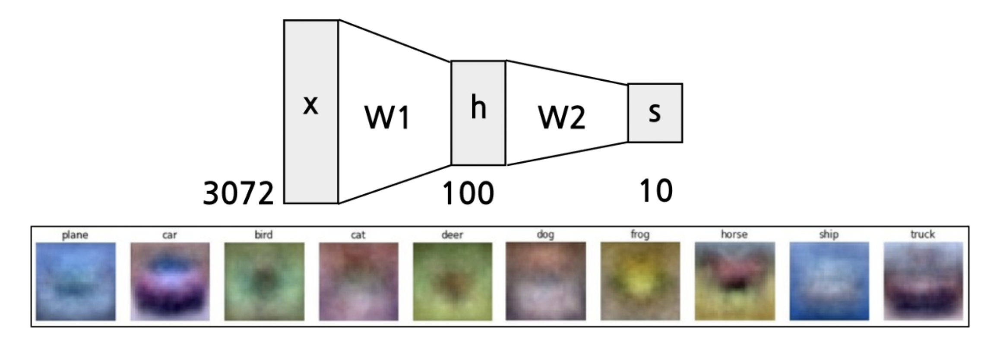
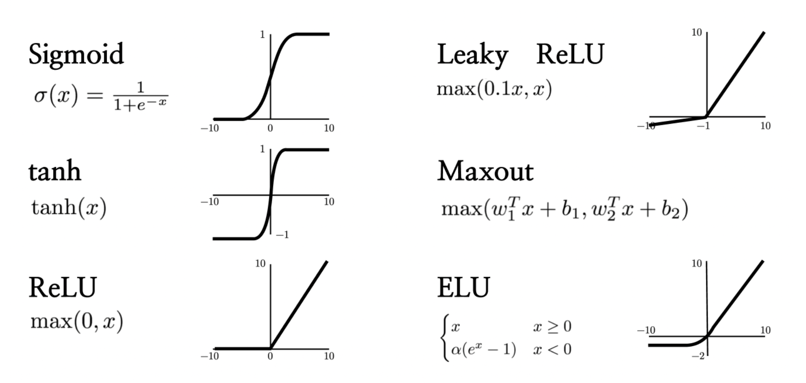
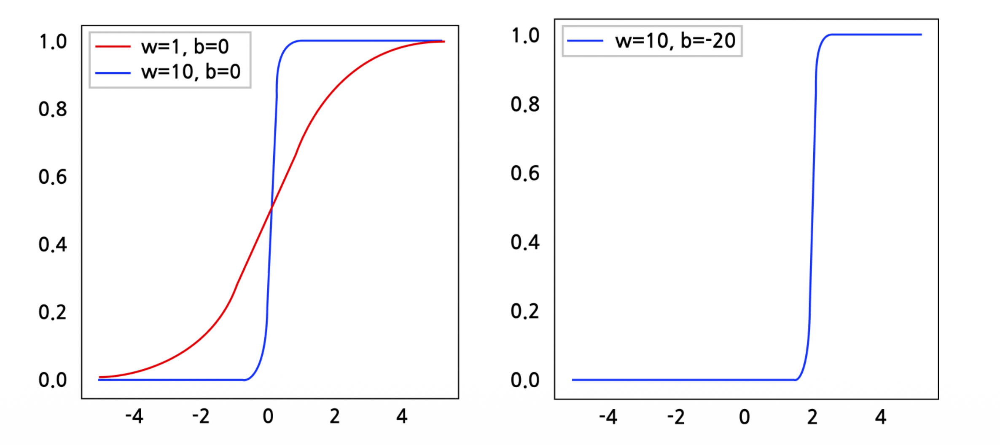
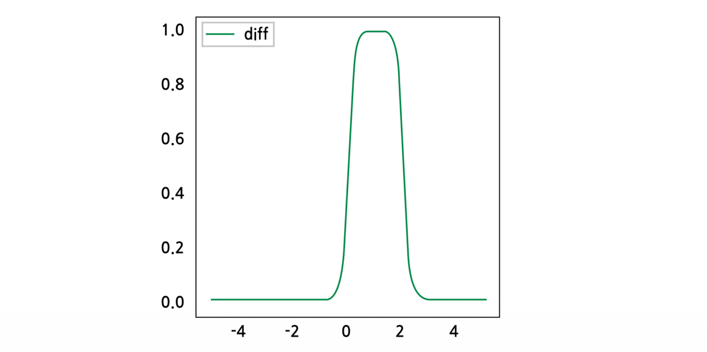
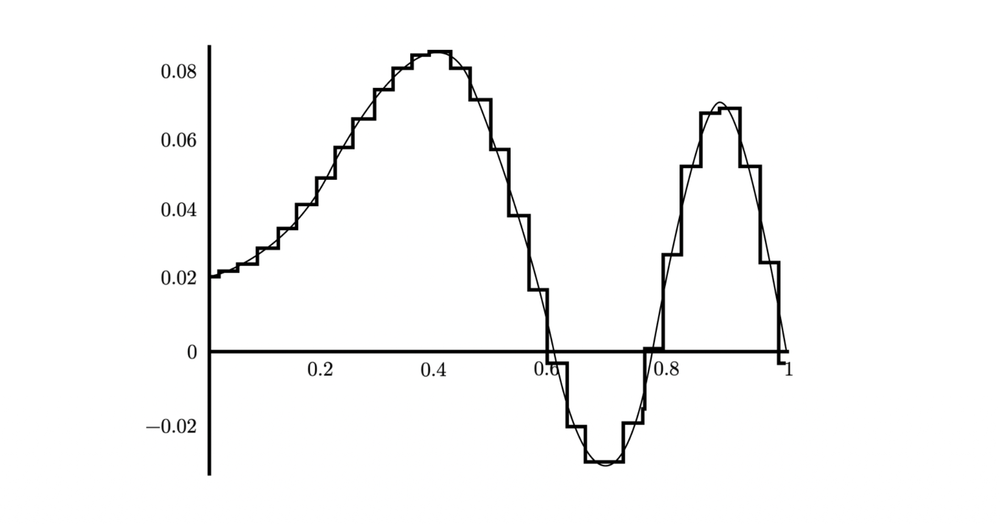

1. Introduction: 선형 모델에서 신경망으로
- 기계학습 모델을 설계할 때, 우리는 입력 데이터 \(x\)를 원하는 출력값(예: 클래스 점수)으로 변환하는 함수 \(f(x)\)를 찾고자 합니다. 가장 단순한 형태는 가중치 행렬 \(W\)를 곱하는 선형 점수 함수(Linear score function)입니다.
\[f = Wx\]
- 예를 들어, 32x32 크기의 RGB 이미지를 다룬다고 가정해 봅시다. 이 이미지를 1차원 벡터로 펼치면 \(32 \times 32 \times 3 = 3072\)차원의 입력 벡터 \(x\)가 됩니다. 만약 10개의 클래스(비행기, 자동차, 새, 고양이 등)를 분류해야 한다면, 가중치 행렬 \(W\)를 통해 3072차원의 입력을 10차원의 출력 점수로 선형 변환하게 됩니다.
- 하지만 현실의 복잡한 데이터는 단순한 선형 변환만으로 분류하기 어렵습니다. 이를 극복하기 위해 등장한 것이 바로 다층 퍼셉트론(Multi-layer Perceptron, MLP), 즉 신경망(Neural Networks)입니다.
2. 2층 신경망 (2-layer Neural Network)과 계층적 특징 추출
- 단일 선형 변환의 한계를 극복하기 위해, 우리는 중간에 은닉층(Hidden layer)을 도입하고 비선형성을 추가할 수 있습니다.
\[f = W_2 \max(0, W_1 x)\]
- 이 수식은 전통적인 2층 신경망의 구조를 나타냅니다.
- 먼저 입력 \(x\) (크기: 3072)에 가중치 행렬 \(W_1\)을 곱하여 중간 단계의 표현인 은닉 벡터 \(h\) (예: 크기 100)를 생성합니다.
- 여기에 \(\max(0, \cdot)\)이라는 비선형 함수(ReLU)를 적용합니다.
- 마지막으로 또 다른 가중치 행렬 \(W_2\)를 곱하여 최종 출력 \(s\) (크기: 10)를 얻습니다.

선형 분류기가 클래스당 단 하나의 “템플릿(Template)”만을 학습했다면, 2층 신경망은 \(W_1\)을 통해 여러 개의 중간 템플릿(Intermediate templates)을 학습하고, \(W_2\)를 통해 이 중간 템플릿들을 선형 결합(Linear combination)하여 더욱 풍부하고 복잡한 패턴을 인식할 수 있게 됩니다.
이러한 논리는 더 깊은 네트워크로 쉽게 확장될 수 있습니다. 예를 들어 3층 신경망(3-layer Neural Network)은 다음과 같이 표현됩니다.
\[f = W_3 \max(0, W_2 \max(0, W_1 x))\]
- 이처럼 신경망은 층을 깊게 쌓아 올릴수록(Can go many layers deep) 데이터의 계층적 특징을 더 정교하게 추출할 수 있습니다.
3. 비선형성 (Non-linearities) : 활성화 함수
- 앞선 수식에서 \(\max(0, \cdot)\)와 같은 함수를 활성화 함수(Activation Function) 또는 비선형성(Non-linearities)이라고 부릅니다.
핵심 질문: 만약 신경망에 비선형성이 없다면 어떻게 될까요? 비선형 함수 없이 선형 연산만 연속으로 적용한다면, \(f = W_2(W_1 x) = (W_2 W_1)x = W"x\)가 되어 결국 단일 선형 변환과 수학적으로 완전히 동일해집니다. 즉, 아무리 층을 깊게 쌓아도 복잡한 패턴을 학습할 수 있는 능력이 증가하지 않습니다. 따라서 신경망의 강력한 표현력은 바로 이 비선형성에서 비롯됩니다.
- 다양한 종류의 비선형 활성화 함수가 연구되었으며, 각각의 수학적 정의는 다음과 같습니다.

- Sigmoid (시그모이드) \[\sigma(x) = \frac{1}{1+e^{-x}}\]
- 입력을 0과 1 사이의 값으로 압착(squash)합니다. 확률적 해석이 가능하지만, 양극단에서 기울기가 소실(Gradient Vanishing)되는 단점이 있습니다.
- tanh (하이퍼볼릭 탄젠트) \[\tanh(x)\]
- 입력을 -1과 1 사이의 값으로 압착합니다. Sigmoid와 유사하지만 중심이 0에 맞춰져(Zero-centered) 있어 학습 초기 단계에서 최적화가 더 유리한 특징이 있습니다.
- ReLU (Rectified Linear Unit) \[\max(0, x)\]
- 딥러닝에서 가장 널리 쓰이는 활성화 함수입니다. 양수에서는 기울기가 1로 유지되어 기울기 소실 문제를 완화하며 계산이 매우 빠릅니다.
- Leaky ReLU \[\max(0.1x, x)\]
- 입력이 음수일 때 완전히 0이 되어 노드가 죽는 현상(Dead ReLU 문제)을 방지하기 위해, 음수 영역에서도 아주 작은 기울기(예: 0.1)를 갖도록 변형한 형태입니다.
- Maxout \[\max(w_1^T x + b_1, w_2^T x + b_2)\]
- 두 선형 변환 중 최댓값을 취하는 형태로, ReLU와 Leaky ReLU를 일반화한 강력한 함수지만 파라미터 수가 두 배로 늘어나는 단점이 있습니다.
- ELU (Exponential Linear Unit) \[f(x) = \begin{cases} x & x \ge 0 \\ \alpha(e^x - 1) & x < 0 \end{cases}\]
- 음수 영역에서 부드러운 곡선(Exponential)을 가져 노이즈에 견고하며, 출력의 평균을 0에 가깝게 만들어 학습을 안정화합니다.
4. 보편적 근사 정리 (Universal Approximation Theorem)
- 신경망이 얼마나 강력한지 수학적으로 증명하는 핵심 정리가 바로 보편적 근사 정리(Universal Approximation Theorem)입니다. (G. Cybenko의 “Approximation by Superpositions of a Sigmoidal Function” 증명 참조)
4.1. 정리(Theorem)의 수학적 정의
Let \(\Omega \subset \mathbb{R}^n\) be compact. Let \(\sigma\) be an element-wise sigmoid function.
Then, \(\forall \epsilon > 0\) and for any continuous function \(f: \mathbb{R}^n \rightarrow \mathbb{R}\), there exist \(m \in \mathbb{N}\), \(W_1 \in \mathbb{R}^{m \times n}\), \(b_1 \in \mathbb{R}^m\), \(W_2 \in \mathbb{R}^{1 \times m}\), and a 2-layer neural network function \(g(x) = W_2 \sigma(W_1 x + b_1)\) s.t. \[|f(x) - g(x)| < \epsilon \quad \forall x \in \Omega.\]
- 해석: 이 정리는 “단 하나의 은닉층을 가진 2층 신경망(비선형 활성화 함수 포함)만으로도, 은닉 노드의 수(\(m\))를 충분히 크게 한다면, 임의의 연속 함수 \(f(x)\)를 우리가 원하는 만큼의 오차(\(\epsilon\)) 이내로 근사(Approximate)할 수 있다”는 것을 의미합니다.
5. UAT에 대한 직관적 이해 (Intuition)
- 수학적 정리를 직관적으로 이해하기 위해, 1차원 입력 \(x\)에 대해 시그모이드 함수를 적용하는 \(\sigma(wx+b)\)의 형태를 단계별로 살펴보겠습니다.
단계 1: 가중치(w)와 편향(b)의 역할

- 가중치 \(w\)의 역할 (기울기 제어): \(w\) 값을 크게 키울수록(예: \(w=1 \rightarrow w=10\)) 시그모이드 함수의 경사가 매우 가파르게 변합니다. 극단적으로 \(w\)가 매우 크면 시그모이드 함수는 마치 특정 지점에서 값이 0에서 1로 튀어 오르는 계단 함수(Step function)처럼 작동하게 됩니다.
- 편향 \(b\)의 역할 (이동 제어): \(b\) 값을 변경하면(예: \(b=0 \rightarrow b=-20\)) 시그모이드 곡선의 중심이 좌우로 이동(Shift)합니다. 위 그림에서는 중심이 0에서 2로 이동한 것을 볼 수 있습니다.
단계 2: Bump 함수 (범프 함수) 만들기
- 이제 중심 위치가 다른 두 개의 가파른 시그모이드 함수를 빼보겠습니다.
- 예를 들어, 중심이 \(x=0\)인 시그모이드 함수에서 중심이 \(x=2\)인 시그모이드 함수(\(b=-20\))를 뺍니다.

- 그 결과, 특정 구간에서만 튀어나와 있는 Bump 함수를 얻을 수 있습니다. 은닉층의 두 노드가 만들어내는 결과를 선형 결합(\(W_2\)를 통한 뺄셈 등)하면 이러한 Bump를 자유자재로 만들어낼 수 있습니다. 이 Bump 함수 역시 \(w\)와 \(b\)를 조정함으로써 그 높이(Scale), 너비, 위치(Shift)를 마음대로 조작할 수 있습니다.
단계 3: 연속 함수의 근사 (Superposition)

- 이러한 Bump 함수들의 집합은 연속 함수 공간에 대한 기저(Basis)를 형성합니다.
- 즉, 적절한 너비와 높이를 가진 수많은 Bump 함수들을 블록처럼 나란히 이어 붙이면(선형 결합하면), 아무리 복잡하게 굴곡진 연속 함수라도 아주 작은 오차율 안에서 계단 형태로 완벽하게 흉내 낼 수 있습니다.
- 이것이 바로 은닉층의 뉴런(노드) 개수가 충분히 많을 때, 2층 신경망이 어떠한 복잡한 함수 \(f(x)\)라도 모델링할 수 있다는 UAT의 핵심 직관입니다.